Gestão de atestados
Fluxo completo de atestados médicos: o colaborador envia de forma estruturada, RH e SSMA analisam com chat contextual e decisões rastreáveis, e a gestão acompanha tudo em painéis.
- Contexto
- Sistema de gestão de pessoas com foco em saúde ocupacional
- Perfis
- Colaborador · RH · SSMA
- Meu papel
- Desenvolvimento full-stack: back-end, banco de dados e interface
- Stack
- PHP MVCjQueryBootstrapChart.jsAJAX
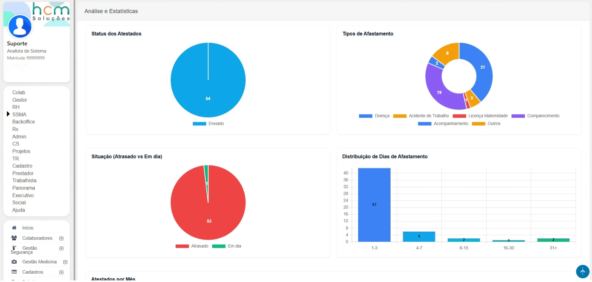
Envio guiado
Datas, tipo de afastamento, dados médicos, anexos e justificativa em um formulário só.
Análise colaborativa
Chat por atestado e ações por status entre colaborador, RH e SSMA.
Visão analítica
Gráficos por status, tipo, situação e dias de afastamento.
Contexto e problema
Antes do módulo, o envio de atestados era pouco padronizado e a comunicação entre as áreas acontecia fora do sistema.
- Documentos sem padrão e dados inconsistentes.
- Pouca rastreabilidade das decisões tomadas.
- Retrabalho e lentidão na análise.
- Baixa governança sobre prazos, pendências e status.
Solução
Uni a frente do colaborador e a frente de análise em um fluxo único, com histórico e comunicação dentro do próprio atestado.
- Envio: modal com datas, cálculo do fim do afastamento, tipo, CRM, CID (tratado como dado sensível), contato e até 3 anexos (PDF, JPG ou PNG de até 10 MB). O envio deve ocorrer em até 2 dias úteis após a emissão.
- Histórico do colaborador: atestados enviados com status, arquivos, detalhes e chat.
- Análise: filtros por empresa, filial, período, tipo, status, situação e chats pendentes; ações de revisão e atualização de status.
- Chat por atestado: mensagens e anexos com bloqueio após o encerramento em cenários específicos.
- Painel analítico carregado de forma assíncrona e tour guiado para onboarding.
Telas
Capturas do sistema em produção. Dados pessoais e de clientes foram ocultados (LGPD). Clique nas imagens para ampliar.

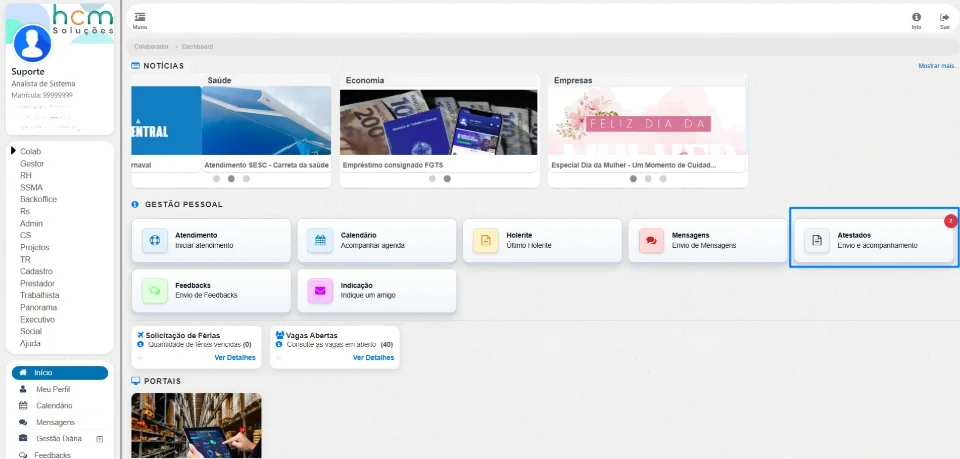

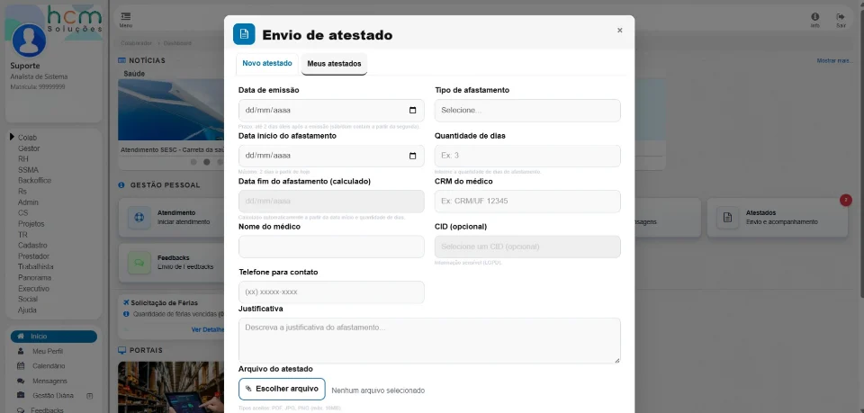

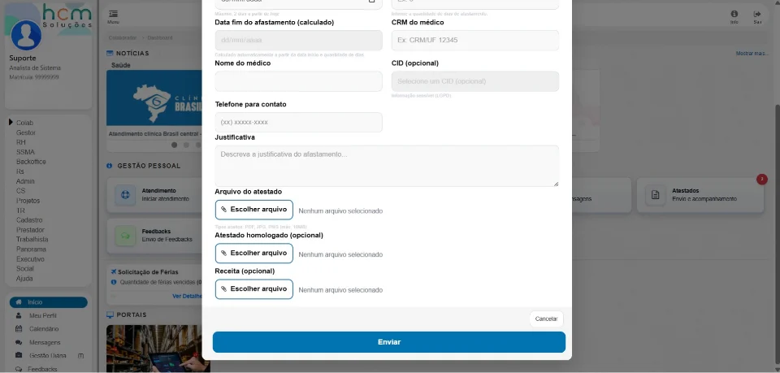

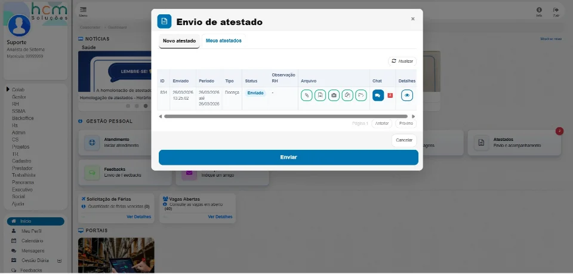

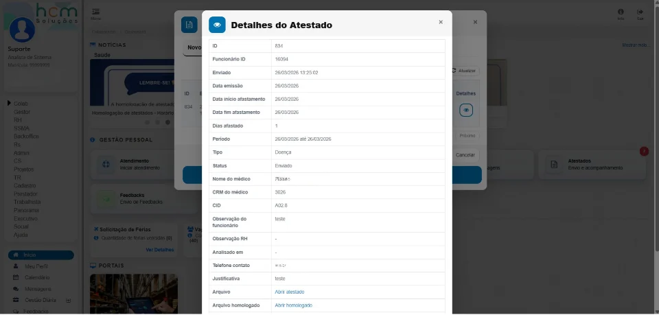

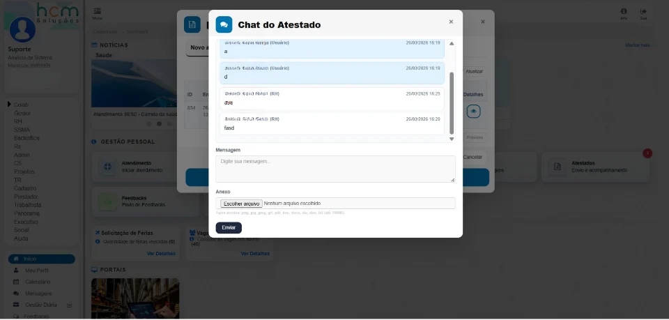

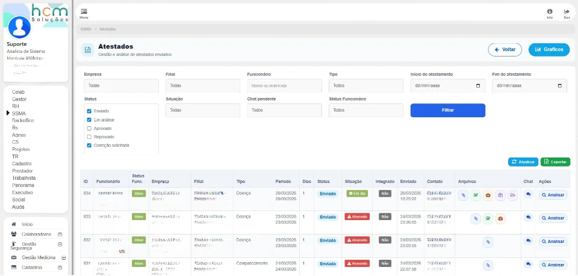

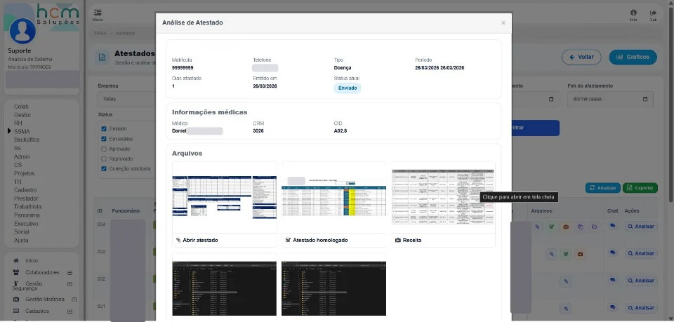

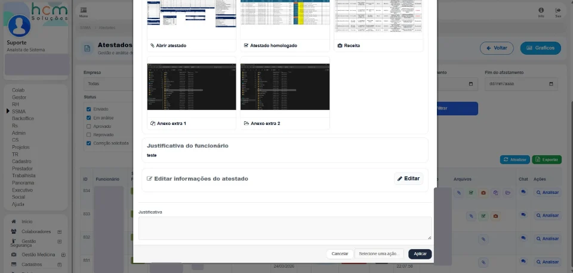

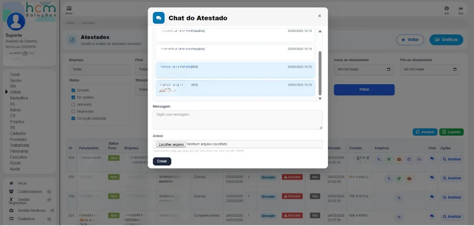
Tecnologias
- Back-end: PHP em MVC, com controller responsável por sessão, permissões e composição dos dados.
- Front-end: HTML, CSS, JavaScript, jQuery e Bootstrap (modais, abas e componentes).
- Gráficos: Chart.js com plugin de rótulos.
- Dados: banco relacional com catálogos como o de CID; endpoints AJAX para listagem, detalhes, status, exportação e chat.
- Renderização: primeira carga no servidor e atualizações parciais via AJAX.
Desafios técnicos
Estado da tela
Filtros, paginação, modal de análise, chat e gráficos sincronizados sem recarregar a página.
Gráficos confiáveis
Verificação de carregamento da biblioteca, nova tentativa e mensagem amigável em caso de falha.
Regras no chat
Mensagens bloqueadas após o encerramento quando a regra de negócio exige.
Listagens grandes
Paginação assíncrona e filtros granulares para reduzir payload.
Resultados
O envio e a análise de atestados ficaram padronizados, com decisões rastreáveis e menos retrabalho entre as áreas.
Padronização
Fluxo estruturado de envio, triagem e análise.
Rastreabilidade
Decisões e conversas registradas no próprio atestado.
Performance
Atualizações parciais e gráficos destruídos e recriados sob controle.
Usabilidade
Formulários guiados, alertas contextuais e tour de onboarding.